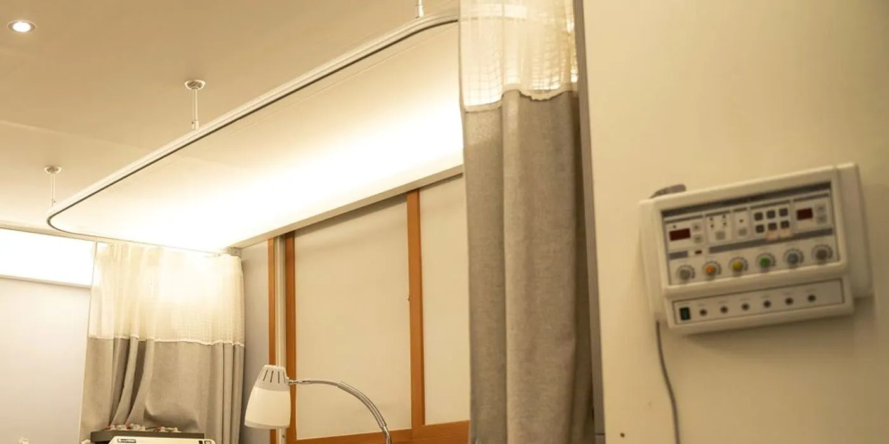

초겨울에 침만 삼켜도 목이 따끔하게 아픈 날이 시작되면, 열과 편도 상태, 숨쉬기와 삼키기 정도를 먼저 확인하고, 목을 쉬게 하는 하루의 순서와 몸 전체의 피로를 함께 살핍니다.
여쭙는 것
- 목이 아프기 시작한 것은 언제부터인가요? 아침에 가장 심한가요, 하루 종일 비슷한가요?
- 체온을 재 보셨나요? 오한이나 몸살 기운이 함께 있나요?
- 통증이 양쪽인가요, 한쪽으로 치우쳐 있나요? 귀까지 당기나요?
생활에서 해 볼 것
- 아침에 일어나면 바로 미지근한 물을 한 컵 천천히 마셔 밤사이 마른 목을 적셔 주세…
- 오전과 오후, 잠들기 전 하루 세 번 정도 미지근한 소금물로 가글을 해 보세요. 물…
- 물은 한 번에 많이 마시기보다 30분에서 1시간마다 몇 모금씩 나누어 마시는 편이…
한의원에서 함께 살필 것
- 병원에서 큰 이상은 없다고 들었지만 목 통증과 몸살 기운이 오래 남는 경우
- 감기가 들 때마다 목부터 아프고 회복이 더딘 편인 경우
- 목이 마르고 따끔한 느낌이 아침마다 반복되는 경우
먼저 확인이 필요한 신호
- 침을 삼키지 못해 입에 고이거나 흘리는 경우
- 입이 잘 벌어지지 않거나 목소리가 뭉개지는 경우
- 38.5도 넘는 고열이 이어지거나 편도에 하얀 점과 고름이 보이는 경우
초겨울 아침에 일어났는데 침을 삼킬 때마다 목 안쪽이 따끔하고, 말을 하거나 물을 마실 때도 걸리는 느낌이 든다면 대개는 목 점막에 염증이 생기기 시작한 감기 초반인 경우가 많습니다. 이런 목 통증은 바이러스 때문에 생기는 일이 흔하고, 목을 쉬게 하고 몸을 따뜻하게 하며 잘 자는 것만으로도 며칠 안에 가라앉는 분이 많습니다. 다만 열이 높고 편도가 붓고 하얀 점이 보이거나, 침을 삼키지 못해 흘릴 정도이거나, 입이 잘 벌어지지 않거나, 목소리가 뭉개지고 숨쉬기가 불편하다면 집에서 지켜볼 상황이 아닙니다. 이 글에서는 처음 며칠 동안 무엇을 살피고 어떻게 지내면 좋은지, 그리고 언제 바로 병원에 가야 하는지를 정리했습니다.
왜 침을 삼킬 때 더 아플까요
- 목 안쪽 점막은 삼킬 때마다 근육이 조이며 움직이기 때문에, 점막이 붓고 예민해지면 침 한 번 삼키는 동작에도 따끔한 통증을 느끼게 됩니다.
- 밤사이 입을 벌리고 자거나 난방으로 방이 건조하면 목 점막이 말라 아침에 통증이 가장 심하고, 물을 마시고 시간이 지나면 조금 덜해지는 흐름이 흔합니다.
- 초겨울에는 실내외 온도 차가 크고 환기를 덜 하게 되어, 감기를 일으키는 바이러스가 퍼지기 쉬운 환경이 됩니다.
- 연말을 앞두고 일이 몰리거나 잠이 부족하면 몸이 감기를 이겨 내는 힘이 떨어져 목부터 탈이 나는 분이 많습니다.
- 목 통증이 한쪽으로 치우치고 귀까지 당긴다면 편도나 그 주변에 염증이 몰려 있을 수 있어 조금 더 주의가 필요합니다.
- 한의학에서는 목이 붓고 따끔한 것을 바깥의 찬 기운이나 열이 목에 머문 모습으로 보고, 오한이 먼저인지 열감이 먼저인지, 목이 마른지, 땀이 나는지를 함께 살펴 몸이 어느 쪽으로 기울었는지를 봅니다.

먼저 이렇게 여쭙니다
- 목이 아프기 시작한 것은 언제부터인가요? 아침에 가장 심한가요, 하루 종일 비슷한가요?
- 체온을 재 보셨나요? 오한이나 몸살 기운이 함께 있나요?
- 통증이 양쪽인가요, 한쪽으로 치우쳐 있나요? 귀까지 당기나요?
- 거울로 목 안을 보았을 때 편도가 붓거나 하얀 점, 고름 같은 것이 보이나요?
- 침이나 물을 삼키기 어려울 정도인가요? 음식을 먹을 수 있나요?
- 입이 잘 벌어지지 않거나 목소리가 뭉개지는 느낌은 없나요?
- 콧물, 기침, 가래가 함께 있나요?
- 가족이나 직장에 비슷하게 아픈 사람이 있나요?
- 최근 잠이 부족하거나 과로, 술자리가 이어졌나요?
- 이전에도 이 시기마다 목부터 아팠다면 그때 어떻게 지나갔는지도 이어서 여쭙니다.
일상에서 먼저 해 볼 수 있는 것
아래는 목이 따끔하기 시작한 첫날부터 사흘째까지의 하루 흐름을 기준으로 적었습니다.
- 아침에 일어나면 바로 미지근한 물을 한 컵 천천히 마셔 밤사이 마른 목을 적셔 주세요. 차가운 물은 목을 더 움츠러들게 할 수 있어 미지근한 온도가 낫습니다.
- 오전과 오후, 잠들기 전 하루 세 번 정도 미지근한 소금물로 가글을 해 보세요. 물 한 컵에 소금을 반 작은술 정도 녹여 30초씩 두세 번 나누어 하면 됩니다. 따갑게 느껴지면 소금을 줄이세요.
- 물은 한 번에 많이 마시기보다 30분에서 1시간마다 몇 모금씩 나누어 마시는 편이 목 점막을 계속 촉촉하게 유지하는 데 도움이 됩니다.
- 따뜻한 보리차, 배숙처럼 부드러운 음료가 목을 편하게 한다는 분이 많습니다. 너무 뜨거운 차는 오히려 점막을 자극하니 손으로 컵을 쥐었을 때 따뜻한 정도로 식혀 드세요.
- 식사는 죽, 계란찜, 두부, 부드러운 국처럼 삼키기 편한 음식으로 하고, 맵고 짜거나 바삭한 음식, 술은 사흘 정도 쉬어 주세요.
- 말을 줄이세요. 속삭이는 것은 오히려 목에 힘이 들어가니, 필요한 말은 낮고 편한 목소리로 짧게 하는 편이 낫습니다. 통화는 문자로 바꿀 수 있으면 바꿔 보세요.
- 침실 습도는 40~60% 정도를 목표로, 가습기를 쓰거나 젖은 수건을 걸어 두세요. 잠들기 전 30분 정도 방을 환기한 뒤 문을 닫고 난방은 지나치게 높이지 않습니다.
- 목에 얇은 손수건이나 목도리를 두르고 자면 목 주변이 식는 것을 막는 데 도움이 된다는 분이 많습니다.
- 첫 사흘은 평소보다 1시간 일찍 잠자리에 들고, 운동은 쉬거나 가벼운 산책 정도로 낮춰 주세요.
- 가족과 함께 지낸다면 마스크를 쓰고 수건과 컵을 따로 쓰며, 손을 자주 씻어 주세요.

예를 들면 이런 경우입니다
아래는 실제 환자 이야기가 아니라 이해를 돕기 위해 만든 예시입니다.
- 예를 들어 연말 업무가 몰려 며칠 밤늦게까지 일한 분이 어느 날 아침 침을 삼킬 때 목이 따끔하고 콧물이 조금 나며 미열이 37도 초반이라면, 감기 초반으로 보고 목을 쉬게 하는 하루 흐름과 일찍 자기를 먼저 해 봅니다. 사흘 안에 통증이 덜해지기 시작하는지가 중요한 기준입니다.
- 예를 들어 목 통증이 오른쪽으로 점점 심해지고 귀까지 당기며, 사흘째에 입이 잘 벌어지지 않고 목소리가 뜨거운 감자를 문 것처럼 뭉개진다면 편도 주변에 고름이 생기는 경우일 수 있어 바로 이비인후과 진료를 받아야 합니다.
- 예를 들어 기침과 콧물은 거의 없는데 열이 38.5도 넘게 오르고 편도에 하얀 점이 보이며 목 옆 림프절이 아프게 만져진다면 세균 감염 여부를 확인하는 검사가 먼저 필요할 수 있습니다.
- 예를 들어 감기 기운은 지나갔는데 아침마다 목이 따끔했다가 낮에는 괜찮다면 밤사이 입으로 숨을 쉬거나 방이 건조한 것이 원인일 수 있어, 침실 습도와 코막힘, 잠자는 자세를 함께 살핍니다.
스스로 점검해 보는 목록
- 목 통증이 사흘 안쪽으로 시작되었다.
- 열은 없거나 38도 미만이다.
- 침과 물은 아파도 삼킬 수 있다.
- 입이 평소처럼 벌어지고 목소리가 크게 뭉개지지 않는다.
- 숨쉬기가 편하다.
- 콧물, 가벼운 기침 같은 감기 증상이 함께 있다.
- 통증이 양쪽으로 비슷하다.
- 물을 마시거나 가글을 하면 잠시라도 덜해진다.
모두 해당한다면 집에서 며칠 쉬며 지켜볼 수 있는 경우가 많고, 하나라도 해당하지 않는다면 진료를 먼저 받는 편이 안전합니다.

한의원에서 함께 살필 수 있는 경우
- 병원에서 큰 이상은 없다고 들었지만 목 통증과 몸살 기운이 오래 남는 경우
- 감기가 들 때마다 목부터 아프고 회복이 더딘 편인 경우
- 목이 마르고 따끔한 느낌이 아침마다 반복되는 경우
- 잠이 부족하고 피로가 쌓인 상태에서 감기가 자주 드는 경우
- 감기 뒤 목소리가 쉬거나 목에 무언가 걸린 느낌이 남는 경우
좋은꿈참사랑한의원에서는 첫 방문 때 목 통증이 시작된 날과 흐름, 열과 오한, 삼키기와 숨쉬기, 함께 있는 코와 기침 증상을 먼저 여쭙니다. 이어 최근의 잠과 일, 식사와 대변 상태를 확인하고, 모든 분께 진맥을 하며 맥이 빠르고 들떠 있는지, 몸이 지쳐 가라앉아 있는지를 살핍니다. 필요하면 혀의 색과 설태, 목 주변을 함께 봅니다. 이야기와 진찰을 바탕으로 침이나 한약 상담 여부를 정하고, 귀가 전에는 며칠 동안의 생활 순서와 다시 연락하거나 병원에 가야 할 신호를 정리해 드립니다. 다음 방문에서는 그사이 목과 몸 상태가 어떻게 지나갔는지부터 이어서 여쭙니다. 이종호 대표원장을 비롯해 조영기 원장, 정원영 원장이 같은 방식으로 진료하며, 검사나 항생제 처방이 필요한지 확인해야 할 상황으로 보이면 병원 진료를 먼저 안내합니다.
얼마나 지켜보고, 언제 상담하면 좋을까요
- 감기로 인한 목 통증은 대개 사흘에서 닷새 사이에 정점을 지나 덜해지기 시작합니다.
- 일주일이 지나도 침을 삼킬 때 통증이 처음과 비슷하거나 더 심해진다면 진료를 받아 보세요.
- 열이 사흘 넘게 이어지거나, 열이 내렸다가 다시 오르면 병원 진료가 필요합니다.
- 목 통증은 덜해졌지만 기침이나 목 이물감이 2~3주 넘게 남는다면 상담을 권합니다.
- 침을 삼키지 못해 흘리거나, 입이 잘 벌어지지 않거나, 목소리가 뭉개지고 숨이 불편하다면 기다리지 말고 바로 응급 진료를 받으세요.

이렇게 기록해 오시면 상담이 쉬워집니다
- 목 통증이 시작된 날과 하루 중 가장 아픈 때
- 아침, 오후, 밤의 체온
- 통증이 한쪽인지 양쪽인지, 귀까지 당기는지
- 거울로 본 목 안 모습(가능하면 사진)
- 하루에 마신 물의 양과 먹은 음식
- 함께 있는 콧물, 기침, 가래의 정도와 색
- 복용한 약 이름과 시각
- 최근 일주일의 잠자는 시간과 과로 여부
이런 증상은 먼저 확인이 필요합니다
- 침을 삼키지 못해 입에 고이거나 흘리는 경우
- 입이 잘 벌어지지 않거나 목소리가 뭉개지는 경우
- 38.5도 넘는 고열이 이어지거나 편도에 하얀 점과 고름이 보이는 경우
- 목이 한쪽으로 붓고 딱딱하게 만져지거나 목을 돌리기 어려운 경우
- 소변이 크게 줄거나 물을 거의 마시지 못하는 경우
- 목 통증이 3주 넘게 이어지거나 한쪽에 혹이 만져지는 경우
복용 중인 약은 처방한 의사와 상의 없이 줄이거나 끊지 않습니다. 숨이 차거나 숨 쉴 때 쌕쌕 소리가 나고, 입술이나 얼굴, 목이 붓거나, 침을 삼키지 못해 앉은 자세로만 숨을 쉴 수 있다면 기다리지 말고 119에 바로 연락하세요.

함께 읽으면 좋은 글
- 감기 기운이 느껴질 때 첫날은 어떻게 쉬면 좋을까요?
- 환절기에 목이 건조하고 칼칼할 때는 어떻게 관리하나요?
- 목이 쉬고 목소리가 잘 안 나올 때는 어떻게 살피나요?
한눈에 보는 표
| 구분 | 핵심 |
|---|---|
| 여쭙는 것 | 목이 아프기 시작한 것은 언제부터인가요? 아침에 가장 심한가요, 하루 종일 비슷한가요? 체온을 재 보셨나요? 오한이나 몸살 기운이 함께 있나요? |
| 생활에서 해 볼 것 | 아침에 일어나면 바로 미지근한 물을 한 컵 천천히 마셔 밤사이 마른 목을 적셔 주세요. 차가운 물은 목을 더 움츠러들게 할 수 있어 미지근한 온도가 낫습니다. 오전과 오후, 잠들기 전 하루 세 번 정도 미지근한 소금물로 가글을 해 보세요. 물 한 컵에 소금을 반 작은술 정도 녹여 30초씩 두세 번 나누어 하면 됩니다. 따갑게 느껴지면 소금을 줄이세요. |
| 한의원에서 함께 살필 것 | 병원에서 큰 이상은 없다고 들었지만 목 통증과 몸살 기운이 오래 남는 경우 감기가 들 때마다 목부터 아프고 회복이 더딘 편인 경우 |
| 먼저 확인이 필요한 신호 | 침을 삼키지 못해 입에 고이거나 흘리는 경우 입이 잘 벌어지지 않거나 목소리가 뭉개지는 경우 |
자주 묻는 질문
목이 따끔하면 바로 항생제를 먹어야 하나요?
목 통증은 바이러스로 생기는 경우가 많아 항생제가 필요하지 않은 때가 많습니다. 고열, 편도의 하얀 점, 목 옆 림프절 통증이 함께 있다면 병원에서 검사 후 판단을 받으세요.
소금물 가글은 얼마나 자주 해도 되나요?
하루 세 번 정도, 미지근한 물에 소금을 조금 녹여 부드럽게 하는 정도를 권합니다. 따갑거나 입안이 마르면 소금 양을 줄이거나 횟수를 낮추세요.
목이 아플 때 아이스크림이나 찬 음료가 괜찮나요?
잠깐 시원하게 느껴질 수 있지만 몸이 쉽게 식는 분은 목이 더 움츠러들 수 있습니다. 미지근하거나 따뜻한 음료를 조금씩 자주 드시는 편을 권합니다.
목이 아픈데 출근해도 되나요?
열이 없고 일상이 가능하다면 마스크를 쓰고 말을 줄이며 지낼 수 있습니다. 열이 나거나 몸살이 심하다면 하루라도 쉬는 편이 회복과 주변 사람 모두에게 낫습니다.
한의원 진료는 언제 받을 수 있나요?
평일은 오전 9시 30분부터 오후 8시까지(점심 13:00~14:00), 토·일·공휴일은 오전 9시 30분부터 오후 3시까지 점심시간 없이 진료합니다. 자세한 내용은 02-815-7510으로 문의해 주세요.
이 글은 일반적인 건강 정보이며 개인의 진단이나 치료를 대신하지 않습니다. 증상이 있거나 복용 중인 약이 있다면 진료를 통해 확인하세요. 치료 효과는 개인마다 다를 수 있습니다.
작성 기준: 일반적으로 알려져 있는 건강 정보를 참고해 정리했습니다(대표원장 감수). 증상 기록은 1~2주 동안 하루 1회, 비슷한 시간에 적어 오시면 지난 상태와 비교하기 쉽습니다.
좋은꿈참사랑한의원은 재진 때 지난번 이야기부터 이어서 여쭙니다. 진료시간과 예약은 오시는 길에서 확인하세요.